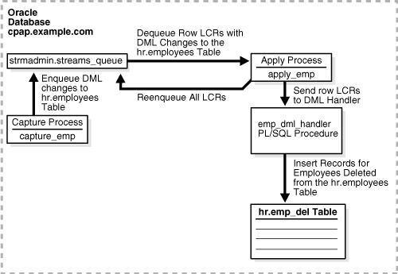

4 Single-Database Capture and Apply Example
This chapter illustrates an example of a single database that captures changes to a table with a capture process, reenqueues the captured changes into a queue, and then uses a procedure DML handler during apply to insert a subset of the changes into a different table.
The following topics describe configuring an example single-database capture and apply example:
4.1 Overview of the Single-Database Capture and Apply Example
The example in this chapter illustrates using Oracle Streams to capture and apply data manipulation language (DML) changes at a single database named cpap.example.com. Specifically, this example captures DML changes to the employees table in the hr schema, placing row logical change records (LCRs) into a queue named streams_queue. Next, an apply process dequeues these row LCRs from the same queue, reenqueues them into this queue, and sends them to a procedure DML handler.
When the row LCRs are captured, they reside in the buffered queue and cannot be dequeued explicitly. After the row LCRs are reenqueued during apply, they are available for explicit dequeue by an application. This example does not create the application that dequeues these row LCRs.
This example illustrates a procedure DML handler that inserts records of deleted employees into an emp_del table in the hr schema. This example assumes that the emp_del table is used to retain the records of all deleted employees. The procedure DML handler is used to determine whether each row LCR contains a DELETE statement. When the procedure DML handler finds a row LCR containing a DELETE statement, it converts the DELETE into an INSERT on the emp_del table and then inserts the row.
Figure 4-1 provides an overview of the environment.
Figure 4-1 Single Database Capture and Apply Example
Description of "Figure 4-1 Single Database Capture and Apply Example"
4.2 Prerequisites
The following prerequisites must be completed before you begin the example in this chapter.
-
Optionally set the
STREAMS_POOL_SIZEinitialization parameter to an appropriate value. This parameter specifies the size of the Oracle Streams pool. The Oracle Streams pool stores messages in a buffered queue and is used for internal communications during parallel capture and apply. When theMEMORY_TARGET,MEMORY_MAX_TARGET, orSGA_TARGETinitialization parameter is set to a nonzero value, the Oracle Streams pool size is managed automatically.See Also:
Oracle Streams Replication Administrator's Guide for information about setting initialization parameters that are relevant to Oracle Streams
-
Set the database to run in
ARCHIVELOGmode. Any database producing changes that will be captured must run inARCHIVELOGmode.See Also:
Oracle Database Administrator's Guide for information about running a database in
ARCHIVELOGmode -
Create an Oracle Streams administrator at the database. This example assumes that the user name of the Oracle Streams administrator is
strmadmin.This example executes a subprogram in an Oracle Streams packages within a stored procedure. Specifically, the
emp_dqprocedure created in Step "Create a Procedure to Dequeue the Messages" runs theDEQUEUEprocedure in theDBMS_STREAMS_MESSAGINGpackage. Therefore, the Oracle Streams administrator must be grantedEXECUTEprivilege explicitly on the package. In this case,EXECUTEprivilege cannot be granted through a role. TheDBMS_STREAMS_AUTH.GRANT_ADMIN_PRIVILEGEprocedure grantsEXECUTEon all Oracle Streams packages, as well as other privileges relevant to Oracle Streams. You can either grant theEXECUTEprivilege on the package directly, or use theGRANT_ADMIN_PRIVILEGEprocedure to grant it.See Also:
Oracle Streams Replication Administrator's Guide for information about creating an Oracle Streams administrator
4.3 Set Up the Environment
Complete the following steps to create the hr.emp_del table, set up the Oracle Streams administrator, and create the queue.
- "Set Up the Environment"
- "Create the hr.emp_del Table"
- "Grant Additional Privileges to the Oracle Streams Administrator"
- "Create the ANYDATA Queue at cpap.example.com"
- "Check the Spool Results"
Note:
If you are viewing this document online, then you can copy the text from the "BEGINNING OF SCRIPT" line after this note to the next "END OF SCRIPT" line into a text editor and then edit the text to create a script for your environment. Run the script with SQL*Plus on a computer that can connect to the database.
/************************* BEGINNING OF SCRIPT ******************************
- Show Output and Spool Results
-
Run
SETECHOONand specify the spool file for the script. Check the spool file for errors after you run this script.*/ SET ECHO ON SPOOL streams_setup_capapp.out /*
- Create the hr.emp_del Table
-
Connect to
cpap.example.comas thehruser.*/ CONNECT hr@cpap.example.com /*
Create the
hr.emp_deltable. The columns in theemp_deltable is the same as the columns in theemployeestable, except for one addedtimestampcolumn that will record the date when a row is inserted into theemp_deltable.*/ CREATE TABLE emp_del( employee_id NUMBER(6), first_name VARCHAR2(20), last_name VARCHAR2(25), email VARCHAR2(25), phone_number VARCHAR2(20), hire_date DATE, job_id VARCHAR2(10), salary NUMBER(8,2), commission_pct NUMBER(2,2), manager_id NUMBER(6), department_id NUMBER(4), timestamp DATE); CREATE UNIQUE INDEX emp_del_id_pk ON emp_del (employee_id); ALTER TABLE emp_del ADD (CONSTRAINT emp_del_id_pk PRIMARY KEY (employee_id)); /*
- Grant Additional Privileges to the Oracle Streams Administrator
-
Connect to
cpap.example.comasSYSTEMuser.*/ CONNECT SYSTEM@cpap.example.com /*
Grant the Oracle Streams administrator all privileges on the
emp_deltable, because the Oracle Streams administrator will be the apply user and must be able to insert records into this table. Alternatively, you can alter the apply process to specify thathris the apply user.*/ GRANT ALL ON hr.emp_del TO STRMADMIN; /*
- Create the ANYDATA Queue at cpap.example.com
-
Connect to
cpap.example.comas thestrmadminuser.*/ CONNECT strmadmin@cpap.example.com /*
Run the
SET_UP_QUEUEprocedure to create a queue namedstreams_queueatcpap.example.com. This queue is anANYDATAqueue that will stage the captured changes to be dequeued by an apply process and the user-constructed changes to be dequeued by a dequeue procedure.Running the
SET_UP_QUEUEprocedure performs the following actions:-
Creates a queue table named
streams_queue_table. This queue table is owned by the Oracle Streams administrator (strmadmin) and uses the default storage of this user. -
Creates a queue named
streams_queueowned by the Oracle Streams administrator (strmadmin). -
Starts the queue.
*/ BEGIN DBMS_STREAMS_ADM.SET_UP_QUEUE( queue_table => 'strmadmin.streams_queue_table', queue_name => 'strmadmin.streams_queue'); END; / /* -
- Check the Spool Results
-
Check the
streams_setup_capapp.outspool file to ensure that all actions finished successfully after this script is completed.*/ SET ECHO OFF SPOOL OFF /*************************** END OF SCRIPT ******************************/
4.4 Configure Capture and Apply
Complete the following steps to capture changes to the hr.employees table and apply these changes on single database in a customized way using a procedure DML handler.
- "Show Output and Spool Results"
- "Configure the Capture Process at cpap.example.com"
- "Set the Instantiation SCN for the hr.employees Table"
- "Create the Procedure DML Handler handler Procedure"
- "Set the Procedure DML Handler for the hr.employees Table"
- "Create a Messaging Client for the Queue"
- "Configure the Apply Process at cpap.example.com"
- "Create a Procedure to Dequeue the Messages"
- "Start the Apply Process at cpap.example.com"
- "Start the Capture Process at cpap.example.com"
- "Check the Spool Results"
Note:
If you are viewing this document online, then you can copy the text from the "BEGINNING OF SCRIPT" line after this note to the next "END OF SCRIPT" line into a text editor and then edit the text to create a script for your environment. Run the script with SQL*Plus on a computer that can connect the database.
/************************* BEGINNING OF SCRIPT ******************************
- Show Output and Spool Results
-
Run
SETECHOONand specify the spool file for the script. Check the spool file for errors after you run this script.*/ SET ECHO ON SPOOL streams_config_capapp.out /*
- Configure the Capture Process at cpap.example.com
-
Connect to
cpap.example.comas thestrmadminuser.*/ CONNECT strmadmin@cpap.example.com /*
Configure the capture process to capture DML changes to the
hr.employeestable atcpap.example.com. This step creates the capture process and adds a rule to its positive rule set that instructs the capture process to capture DML changes to this table. This step also prepares thehr.employeestable for instantiation and enables supplemental logging for any primary key, unique key, bitmap index, and foreign key columns in the table.Supplemental logging places additional information in the redo log for changes made to tables. The apply process needs this extra information to perform some operations, such as unique row identification.
*/ BEGIN DBMS_STREAMS_ADM.ADD_TABLE_RULES( table_name => 'hr.employees', streams_type => 'capture', streams_name => 'capture_emp', queue_name => 'strmadmin.streams_queue', include_dml => TRUE, include_ddl => FALSE, inclusion_rule => TRUE); END; / /* - Set the Instantiation SCN for the hr.employees Table
-
Because this example captures and applies changes in a single database, no instantiation is necessary. However, the apply process at the
cpap.example.comdatabase still must be instructed to apply changes that were made to thehr.employeestable after a specific system change number (SCN).This example uses the
GET_SYSTEM_CHANGE_NUMBERfunction in theDBMS_FLASHBACKpackage to obtain the current SCN for the database. This SCN is used to run theSET_TABLE_INSTANTIATION_SCNprocedure in theDBMS_APPLY_ADMpackage.The
SET_TABLE_INSTANTIATION_SCNprocedure controls which LCRs for a table are ignored by an apply process and which LCRs for a table are applied by an apply process. If the commit SCN of an LCR for a table from a source database is less than or equal to the instantiation SCN for that table at a destination database, then the apply process at the destination database discards the LCR. Otherwise, the apply process applies the LCR. In this example, thecpap.example.comdatabase is both the source database and the destination database.The apply process will apply transactions to the
hr.employeestable with SCNs that were committed after SCN obtained in this step.Note:
The
hr.employeestable also must be prepared for instantiation. This preparation was done automatically when the capture process was configured with a rule to capture DML changes to thehr.employeestable in Step "Configure the Capture Process at cpap.example.com".*/ DECLARE iscn NUMBER; -- Variable to hold instantiation SCN value BEGIN iscn := DBMS_FLASHBACK.GET_SYSTEM_CHANGE_NUMBER(); DBMS_APPLY_ADM.SET_TABLE_INSTANTIATION_SCN( source_object_name => 'hr.employees', source_database_name => 'cpap.example.com', instantiation_scn => iscn); END; / /* - Create the Procedure DML Handler handler Procedure
-
This step creates the
emp_dml_handlerprocedure. This procedure will be the procedure DML handler forDELETEchanges to thehr.employeestable. It converts any row LCR containing aDELETEcommand type into anINSERTrow LCR and then inserts the converted row LCR into thehr.emp_deltable by executing the row LCR.*/ CREATE OR REPLACE PROCEDURE emp_dml_handler(in_any IN ANYDATA) IS lcr SYS.LCR$_ROW_RECORD; rc PLS_INTEGER; command VARCHAR2(30); old_values SYS.LCR$_ROW_LIST; BEGIN -- Access the LCR rc := in_any.GETOBJECT(lcr); -- Get the object command type command := lcr.GET_COMMAND_TYPE(); -- Check for DELETE command on the hr.employees table IF command = 'DELETE' THEN -- Set the command_type in the row LCR to INSERT lcr.SET_COMMAND_TYPE('INSERT'); -- Set the object_name in the row LCR to EMP_DEL lcr.SET_OBJECT_NAME('EMP_DEL'); -- Get the old values in the row LCR old_values := lcr.GET_VALUES('old'); -- Set the old values in the row LCR to the new values in the row LCR lcr.SET_VALUES('new', old_values); -- Set the old values in the row LCR to NULL lcr.SET_VALUES('old', NULL); -- Add a SYSDATE value for the timestamp column lcr.ADD_COLUMN('new', 'TIMESTAMP', ANYDATA.ConvertDate(SYSDATE)); -- Apply the row LCR as an INSERT into the hr.emp_del table lcr.EXECUTE(TRUE); END IF; END; / /* - Set the Procedure DML Handler for the hr.employees Table
-
Set the procedure DML handler for the
hr.employeestable to the procedure created in Step "Create the Procedure DML Handler handler Procedure". Notice that theoperation_nameparameter is set toDEFAULTso that the procedure DML handler is used for each possible operation on the table, includingINSERT,UPDATE, andDELETE.*/ BEGIN DBMS_APPLY_ADM.SET_DML_HANDLER( object_name => 'hr.employees', object_type => 'TABLE', operation_name => 'DEFAULT', error_handler => FALSE, user_procedure => 'strmadmin.emp_dml_handler', apply_database_link => NULL, apply_name => NULL); END; / /* - Create a Messaging Client for the Queue
-
Create a messaging client that can be used by an application to dequeue the reenqueued messages. A messaging client must be specified before the messages can be reenqueued into the queue.
*/ BEGIN DBMS_STREAMS_ADM.ADD_TABLE_RULES( table_name => 'hr.employees', streams_type => 'dequeue', streams_name => 'hr', queue_name => 'strmadmin.streams_queue', include_dml => TRUE, include_ddl => FALSE, inclusion_rule => TRUE); END; / /* - Configure the Apply Process at cpap.example.com
-
Create an apply process to apply DML changes to the
hr.employeestable. Although the procedure DML handler for the apply process causes deleted employees to be inserted into theemp_deltable, this rule specifies theemployeestable, because the row LCRs in the queue contain changes to theemployeestable, not theemp_deltable. When you run theADD_TABLE_RULESprocedure to create the apply process, the out parameterdml_rule_namecontains the name of the DML rule created. This rule name is then passed to theSET_ENQUEUE_DESTINATIONprocedure.The
SET_ENQUEUE_DESTINATIONprocedure in theDBMS_APPLY_ADMpackage specifies that any apply process using the DML rule generated byADD_TABLE_RULESwill enqueue messages that satisfy this rule intostreams_queue. In this case, the DML rule is for row LCRs with DML changes to thehr.employeestable. A local queue other than the apply process queue can be specified if appropriate.*/ DECLARE emp_rule_name_dml VARCHAR2(30); emp_rule_name_ddl VARCHAR2(30); BEGIN DBMS_STREAMS_ADM.ADD_TABLE_RULES( table_name => 'hr.employees', streams_type => 'apply', streams_name => 'apply_emp', queue_name => 'strmadmin.streams_queue', include_dml => TRUE, include_ddl => FALSE, source_database => 'cpap.example.com', dml_rule_name => emp_rule_name_dml, ddl_rule_name => emp_rule_name_ddl); DBMS_APPLY_ADM.SET_ENQUEUE_DESTINATION( rule_name => emp_rule_name_dml, destination_queue_name => 'strmadmin.streams_queue'); END; / /* - Create a Procedure to Dequeue the Messages
-
The
emp_dqprocedure created in this step can be used to dequeue the messages that are reenqueued by the apply process. In Step "Configure the Apply Process at cpap.example.com", theSET_ENQUEUE_DESTINATIONprocedure was used to instruct the apply process to enqueue row LCRs containing changes to thehr.employeestable intostreams_queue. When theemp_dqprocedure is executed, it dequeues each row LCR in the queue and displays the type of command in the row LCR, eitherINSERT,UPDATE, orDELETE. Any information in the row LCRs can be accessed and displayed, not just the command type.See Also:
Oracle Streams Concepts and Administration for more information about displaying information in LCRs
*/ CREATE OR REPLACE PROCEDURE emp_dq (consumer IN VARCHAR2) AS msg ANYDATA; row_lcr SYS.LCR$_ROW_RECORD; num_var pls_integer; more_messages BOOLEAN := TRUE; navigation VARCHAR2(30); BEGIN navigation := 'FIRST MESSAGE'; WHILE (more_messages) LOOP BEGIN DBMS_STREAMS_MESSAGING.DEQUEUE( queue_name => 'strmadmin.streams_queue', streams_name => consumer, payload => msg, navigation => navigation, wait => DBMS_STREAMS_MESSAGING.NO_WAIT); IF msg.GETTYPENAME() = 'SYS.LCR$_ROW_RECORD' THEN num_var := msg.GetObject(row_lcr); DBMS_OUTPUT.PUT_LINE(row_lcr.GET_COMMAND_TYPE || ' row LCR dequeued'); END IF; navigation := 'NEXT MESSAGE'; COMMIT; EXCEPTION WHEN SYS.DBMS_STREAMS_MESSAGING.ENDOFCURTRANS THEN navigation := 'NEXT TRANSACTION'; WHEN DBMS_STREAMS_MESSAGING.NOMOREMSGS THEN more_messages := FALSE; DBMS_OUTPUT.PUT_LINE('No more messages.'); WHEN OTHERS THEN RAISE; END; END LOOP; END; / /* - Start the Apply Process at cpap.example.com
-
Set the
disable_on_errorparameter tonso that the apply process will not be disabled if it encounters an error, and start the apply process atcpap.example.com.*/ BEGIN DBMS_APPLY_ADM.SET_PARAMETER( apply_name => 'apply_emp', parameter => 'disable_on_error', value => 'N'); END; / BEGIN DBMS_APPLY_ADM.START_APPLY( apply_name => 'apply_emp'); END; / /* - Start the Capture Process at cpap.example.com
-
Start the capture process at
cpap.example.com.*/ BEGIN DBMS_CAPTURE_ADM.START_CAPTURE( capture_name => 'capture_emp'); END; / /* - Check the Spool Results
-
Check the
streams_config_capapp.outspool file to ensure that all actions finished successfully after this script is completed.*/ SET ECHO OFF SPOOL OFF /*************************** END OF SCRIPT ******************************/
4.5 Make DML Changes, Query for Results, and Dequeue Messages
Complete the following steps to confirm that apply process is configured correctly, make DML changes to the hr.employees table, query for the resulting inserts into the hr.emp_del table and the reenqueued messages in the streams_queue_table, and dequeue the messages that were reenqueued by the apply process:
- Confirm the Rule Action Context
-
Step "Configure the Apply Process at cpap.example.com" creates an apply process rule that specifies a destination queue into which LCRs that satisfy the rule are enqueued. In this case, LCRs that satisfy the rule are row LCRs with changes to the
hr.employeestable.Complete the following steps to confirm that the rule specifies a destination queue:
-
Run the following query to determine the name of the rule for DML changes to the
hr.employeestable used by the apply processapply_emp:CONNECT strmadmin@cpap.example.com Enter password: password SELECT RULE_OWNER, RULE_NAME FROM DBA_STREAMS_RULES WHERE STREAMS_NAME = 'APPLY_EMP' AND STREAMS_TYPE = 'APPLY' AND SCHEMA_NAME = 'HR' AND OBJECT_NAME = 'EMPLOYEES' AND RULE_TYPE = 'DML' ORDER BY RULE_NAME;Your output looks similar to the following:
RULE_OWNER RULE_NAME ------------------------------ ------------------------------ STRMADMIN EMPLOYEES3
-
View the action context for the rule returned by the query in Step 1:
COLUMN RULE_OWNER HEADING 'Rule Owner' FORMAT A15 COLUMN DESTINATION_QUEUE_NAME HEADING 'Destination Queue' FORMAT A30 SELECT RULE_OWNER, DESTINATION_QUEUE_NAME FROM DBA_APPLY_ENQUEUE WHERE RULE_NAME = 'EMPLOYEES3' ORDER BY DESTINATION_QUEUE_NAME;
Ensure that you substitute the rule name returned in Step 1 in the
WHEREclause. Your output looks similar to the following:Rule Owner Destination Queue --------------- ------------------------------ STRMADMIN "STRMADMIN"."STREAMS_QUEUE"
The output should show that LCRs that satisfy the apply process rule are enqueued into
streams_queue.
-
- Perform an INSERT, UPDATE, and DELETE on hr.employees
-
Make the following DML changes to the
hr.employeestable.CONNECT hr@cpap.example.com Enter password: password INSERT INTO hr.employees VALUES(207, 'JOHN', 'SMITH', 'JSMITH@EXAMPLE.COM', NULL, '07-JUN-94', 'AC_ACCOUNT', 777, NULL, NULL, 110); COMMIT; UPDATE hr.employees SET salary=5999 WHERE employee_id=207; COMMIT; DELETE FROM hr.employees WHERE employee_id=207; COMMIT; - Query the hr.emp_del Table and the streams_queue_table
-
After some time passes to allow for capture and apply of the changes performed in the previous step, run the following queries to see the results:
CONNECT strmadmin@cpap.example.com Enter password: password SELECT employee_id, first_name, last_name, timestamp FROM hr.emp_del ORDER BY employee_id; SELECT MSG_ID, MSG_STATE, CONSUMER_NAME FROM AQ$STREAMS_QUEUE_TABLE ORDER BY MSG_ID;When you run the first query, you should see a record for the employee with an
employee_idof207. This employee was deleted in the previous step. When you run the second query, you should see the reenqueued messages resulting from all of the changes in the previous step, and theMSG_STATEshould beREADYfor these messages. - Dequeue Messages Reenqueued by the Procedure DML Handler
-
Use the
emp_dqprocedure to dequeue the messages that were reenqueued by the procedure DML handler.SET SERVEROUTPUT ON SIZE 100000 EXEC emp_dq('HR');For each row changed by a DML statement, one line is returned, and each line states the command type of the change (either
INSERT,UPDATE, orDELETE). If you repeat the query on the queue table in Step "Query the hr.emp_del Table and the streams_queue_table" after the messages are dequeued, then the dequeued messages should have been consumed. That is, either theMSG_STATEshould bePROCESSEDfor these messages, or the messages should no longer be in the queue.SELECT MSG_ID, MSG_STATE, CONSUMER_NAME FROM AQ$STREAMS_QUEUE_TABLE ORDER BY MSG_ID;